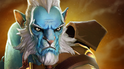
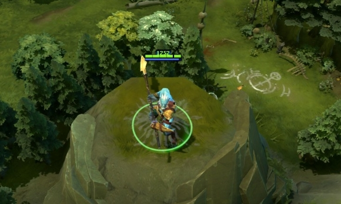
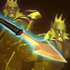
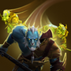

 幻影长矛手
幻影长矛手
背景故事
遥远的极地村庄对于王国中心地带肆虐的战火一无所知。对于那里的村民们来说，用长矛刺鱼、一家人聚餐就是生活的全部。但是战争还是到来了。征兵令传来后，出身卑微的长矛手阿兹瑞斯作为一个身体健全的士兵，加入了军队，宣誓给王国带来和平，这样做也是为了给他的村庄带来和平。他和他的族人在对抗恐怖巫师沃恩的最终进攻中被安排为前锋，这使他们付出了几乎全灭的代价。当前锋队一路战斗到敌人的堡垒下时，长矛手的族人已经只剩阿兹瑞斯一个人了，他作为最后一人，成功地潜入了巫师的城堡。族人的死激怒了阿兹瑞斯，他闯过了巫师设置的每一个死亡陷阱，打败了所有巫师召唤的幻象守卫。很快，这个出身低微的渔夫抵达了沃恩的高塔圣所。两人激战了一整晚，长矛和法杖的对决掀起了狂怒的混沌，最终在一声震耳欲聋的嘶吼中，阿兹瑞斯的长矛刺穿了巫师的身体。但是巫师并没有单纯的死去；他爆裂成无数光影的碎片，以巨大的力量穿透了杀死他的阿兹瑞斯。尘埃落定，战斗激起的烟雾散去后，阿兹瑞斯发现他站在一群他的族人之中。每个人都穿的和他一样，每个人都拿着和他一样的武器，而且他能感觉到每个人都和他在进行同样的思考。意识到王国军在接近，阿兹瑞斯希望这些幻影赶快藏起来，于是他们就一个接一个遁入了虚无。士兵们到达塔顶后发现巫师已经被阿兹瑞斯打倒了。当他们靠近这位战士时，长矛手突然消失了。刚才站在他们面前的长矛手只是一个幻影而已。真正的阿兹瑞斯早已逃离了战场，为他的怒火而羞愧，为他失去的同胞而痛心，他坚定了要用今后的战斗为村人带来和平的决心。
灵魂之矛 附近的幻象也会模仿施法动作。 魔法消耗：125/130/13
冷却时间：7.0/7.0/7.
|
神行百变 这个技能可以躲避攻击和技能弹道，并且驱散负面效果。 魔法消耗：50
冷却时间：25/20/15/1
|
幻影冲锋 对目标发动攻击后，幻影长矛手将快速向其冲去。幻影长矛手的幻象也将继承此技能。 如果冲锋中途取消攻击指令，那么移动速度加成就会消失。 魔法消耗：0
冷却时间：16/12/8/4
|
并列 幻影长矛手的存在有一定几率会破碎，产生自身的幻象。幻象也有几率进一步破碎，再产生幻象。幻影长矛手产生的幻象持续8秒，幻象产生的幻象则持续4秒。 攻击时由并列产生的幻象将自动攻击原攻击目标。 魔法消耗：0
冷却时间：0
|